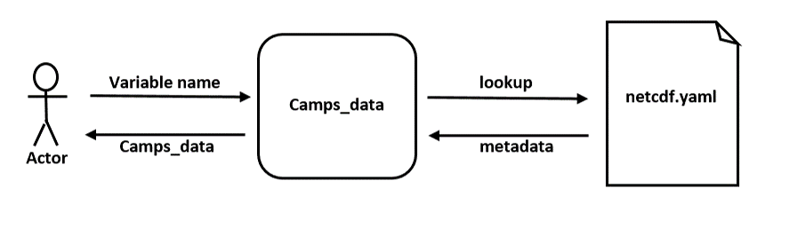
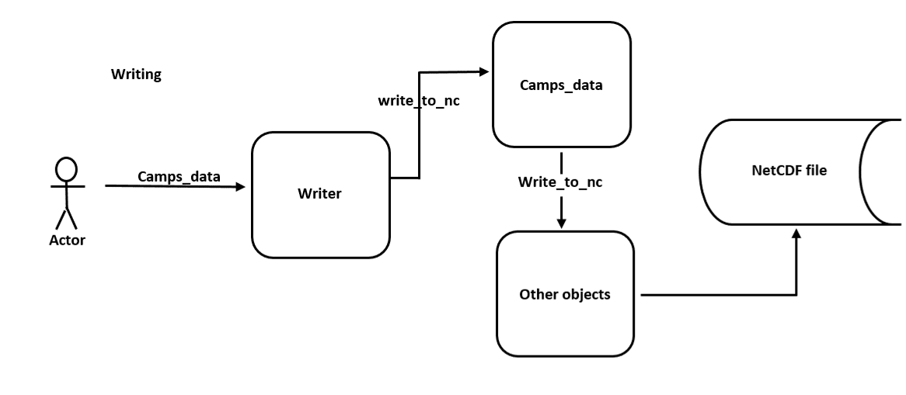

Data Format¶
Camps_data object:¶
The core data structure of CAMPS is the Camps_data object. This is defined as: a class containing components which fully describe a given variable. Many of these components can be written to a netcdf file independently of the parent object. Classes like Time, Location, and Process all share a common interface, nc_writable, which enforces the definition of the method write_to_nc.
The data contained in a Camps_data object can be gridded or vector, it may or may not have a lead time (forecast period) associated with it, and can be n-dimensional. For example, assume there is a variable that is gridded and includes lead times at multiple forecast reference times. This would have 4 dimensions; time, lead time, y, and x, and is a snapshot of a single time. Another type of variable could be a vector of stations. This variable could be one-dimensional as a snapshot of a single time, two-dimensional covering multiple forecast reference times, or three-dimensional and include multiple lead times.These dimensions would be number of stations, lead time, and time. It is also possible to have a Camps_data object with no numerical data, only metadata.
When instantiating a Camps_data object, the variable name provided is used to look up pre-defined metadata from the control file netcdf.yaml. This metadata is added to the Camps_data object for the variable. The name provided must match a variable listed in netcdf.yaml for the autofill feature to work. Alternative names for existing variables can be added to the bottom of the netcdf.yaml control file.
Dimensions:¶
Standard dimension names are located in netcdf.yaml in the ‘Dimensions’ section. Allowing for the flexibility of the object, the number of dimensions of the data are unlimited.
Reading:¶
When reading from a NetCDF input file, either a unique variable name should be provided to the camps.core.reader.read_var() function, or specific metadata should be provided via the template control file pred.yaml. If no name is provided, the metadata is used to search for the desired primary variable from the input file, by matching specific metadata attributes.. If a phenomenonTime or lead_time is also given, CAMPS will slice the retrieved primary variable based on those parameters.
Writing¶
Writing a variable to a NetCDF file is achieved by invoking the Camps_data object’s write_to_nc function. This will call the appropriate write_to_nc function for any composite object of the main Camps_data object.
Camps_data.write_to_nc() uses a core metadata structure to generate unique variable names when writing to NetCDF. Additionally, this function helps format and filter the metadata written to the output file.
Time Coordinates:¶
NetCDF-CAMPS makes use of 4 distinct classes to handle the differences. They are; ForecastReferenceTime, LeadTime, phenomenonTime, and phenomenonTimePeriod.
The following table provides explanations of these time variables:
Phenomenon Time¶
The SOSA property phenomenonTime can be of type instant or period. This makes phenomenonTime appropriate for weather elements valid at both points in time (e.g., temperature, wind speed) and spans of time (e.g., event probabilities, precipitation accumulations).
A phenomenonTime variable is linked to the appropriate primary variable by including it in the coordinates attribute, and the ancillary_variables attribute list. This follows CF-Conventions by making this multi-dimensional time variable an auxiliary coordinate variable. We recognize that in many applications a combination of forecast reference time and lead time can convey the same content as phenomenonTime. However, in NetCDF-CAMPS, it is necessary to create an auxiliary coordinate variable explicitly for this purpose and assign it the appropriate attribute. The purpose is to limit implicit metadata wherever possible.
In NetCDF-CAMPS, a period of time has an instant when it begins, an instant when it ends, and a duration. Generally knowledge of any two of the three will be sufficient to compute the third.
CF-conventions describes a method for identifying vertices on a time axis which can then be designated period bounds. While this method is useful for many applications, we note a number of StatPP applications where it is inadequate. (E.g., this method cannot describe overlapping time periods.) Instead we provide an alternative which is more general and better-suited to StatPP.
For NetCDF-CAMPS time period variables are encoded using the syntax phenomenonTimePeriod. The PROV-O concept specializationOf can take on multiple values. In this example, the variable phenomenonTimePeriod is a specialization of the SOSA concept phenomenonTime and it is also a specialization of the concept of the NetCDF-CAMPS time bounds syntax called “BeginEnd”.
Example:
| SOSA__phenomenonTimePeriod:PROV__specializationOf =
| "StatPP__concepts/TimeBoundsSyntax/BeginEnd", "SOSA__phenomenonTime";
If there are multiple phenomenonTimePeriod variables in a single file, the duration (in hours) is appended to the end of the variable name. These variables should include a dimension (the one that varies fastest) of 2. That dimension can be interpreted as either a duration, beginning, or ending.
In order to properly associate the phenomenonTimePeriod variable with the primary variable it represents, it should be added to the coordinates attribute of the primary variable, as well as the ancillary_variables attribute list. By adding the phenomenonTimePeriod variable to the coordinates attribute, we are declaring it an auxiliary coordinate variable, according to CF-Conventions.
Forecast Reference Time¶
The concept of forecast_reference_time is defined in NetCDF CF-Conventions as “The ‘data time’, the time of the analysis from which the forecast was made”. The forecast_reference_time is an instant in time. It is frequently used to define the epoch of the time coordinate for variables associated with numerical weather prediction output. For data where this variable is appropriate, the syntax used for this variable is FcstRefTime, and will have the standard name forecast_reference_time. In order to link this time variable to the appropriate primary variable, it should be included in the ancillary_variables attribute list.
Lead Time¶
The term “lead time” is often used to describe a duration of time that is measured from a forecast_reference_time to the time when some phenomenon is observed or forecast to occur. There are a number of expressions that are commonly used to describe this concept (e.g., forecast period, forecast lead, time projection). In NetCDF-CAMPS, the syntax used to encode a lead time variable is lead_time. If there are multiple lead time variables in a single file, an identifying number will be appended to the end of the variable name. According to CF-Conventions, the standard name for lead time is forecast_period. The standard name should be included as an attribute for any lead time variable. .In NetCDF-CAMPS datasets, where this concept is meaningful, a variable of appropriate dimensionality should be defined and contain lead time values. This variable should have the attribute PROV__specializationOf declared with a value that expresses the concept of lead time. Ideally this value will use a URI and be machine-readable.
This variable should be encoded as a CF-Conventions coordinate variable, when appropriate. Otherwise, it should be included in the ancillary_variables attribute list for the appropriate primary variable.